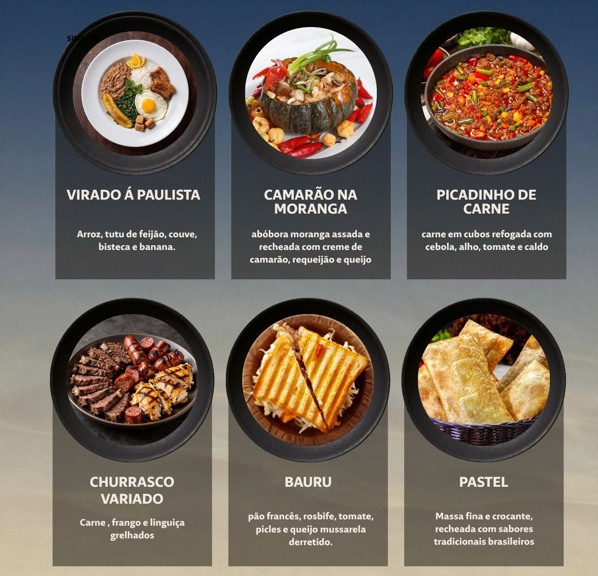
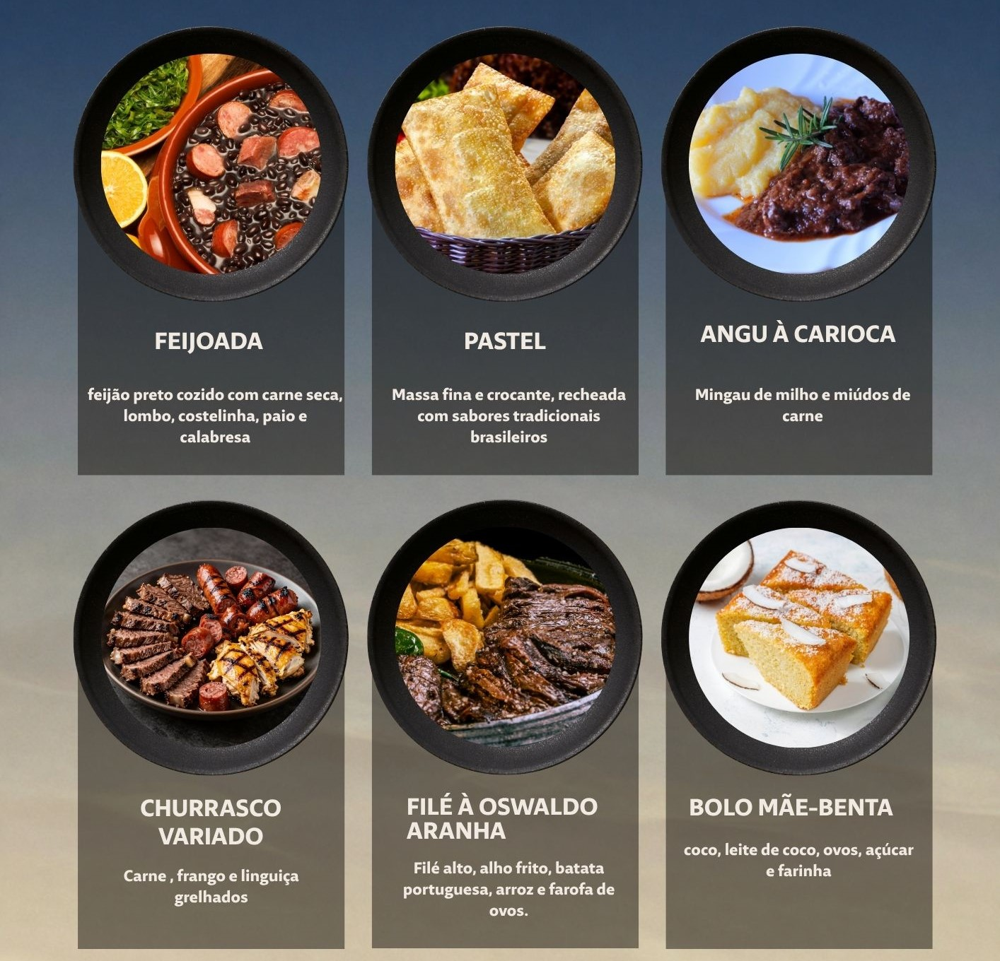
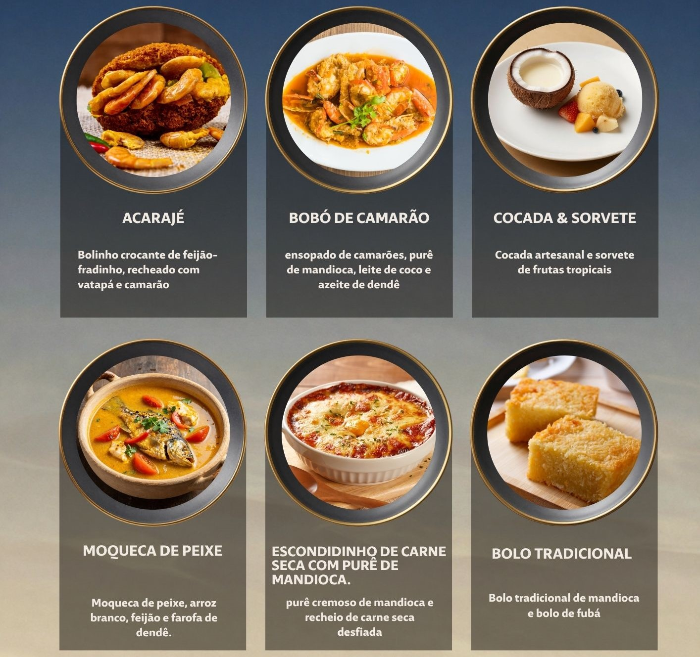
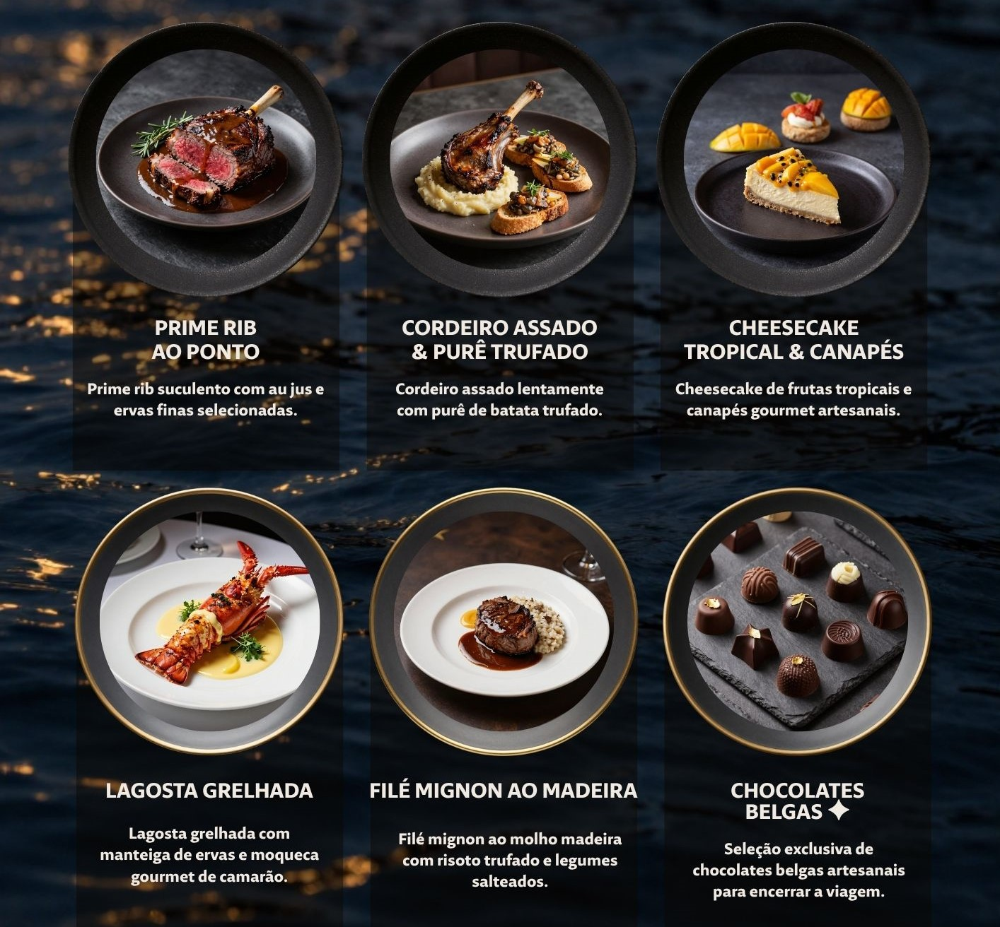

EXPERIÊNCIA A BORDO
Nossos Cardápios
Confira algumas das opções de pratos e experiências gastronômicas disponíveis durante o cruzeiro.

Cardápio Dia 01
Especial Paulista: Uma seleção de pratos típicos de São Paulo

Cardápio Dia 02
Especial Carioca: Uma seleção de pratos típicos do Rio de Janeiro

Cardápio Dia 03
Especial Baiana: Uma seleção de pratos típicos da Bahia

Especial
Uma seleção especial de opções gastronômicas.
Uma experiência gastronômica para tornar sua viagem ainda mais especial.